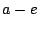
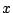

|
|
Keywords: maximum likelihood, phylogenetics, reconciliation, duplication-loss model
The poster presents the introduction to the extended reconciliation problem in which branch lengths are considered.
The reconciled trees where examined by Goodman [1] in seventies of XX century. He introduced the terms mapping and reconciled tree which inspired research on duplication-loss model. The duplication-loss model is the model of evolution in which the unexpected differences between phylogenetic gene tree and species tree are caused by possible gene duplications and gene losses. The topic has been studied by Page, Charleston and others [2,3,4] and last years gave interesting mathematical and biological results [5] and extensions [6]. It is known that the model is biologically meaningful [3] but one of its limitations is that the final species tree and embedded gene tree (reconciled tree) have no information related to branch lengths. The lengths in most current phylogenetic methods represent the number of aminoacids substitutions required to transform one sequence into another.
The problem of estimating the branch lengths in the reconciled tree will be solved by maximum likelihood approach [7,8].
The Figure 1 presents a gene tree and a species tree . The label of each leaf in the species tree represents name of species i.e. we have five species . Leaves in the gene tree represents gene sequences taken from species. If a leaf in the gene tree has label  then the sequence is taken from species . The internal labels of the trees denotes ancestral sequences or species respectively.
The question solved by the reconciliation is Why the trees are incongruent?".
The next picture presents result of the reconciliation (visual presentation of the reconciled tree). Squares denote gene duplication, horizontal lines denote speciation and circles denote gene loss (they occur after the speciation event). Note that after removing all squares, horizontal lines and circles the gene tree will remain.
We will assume that the trees are constructed.
The poster will present the conditions which have to be satisfied
to properly estimate branch lengths in the reconciled tree (Figure
 ) and the
maximum likelihood estimation for the case will be
defined.
) and the
maximum likelihood estimation for the case will be
defined.
I thank Prof. J. Tiuryn for helpful suggestions for this work. Financial support is provided by KBN Grant 8 T11F 016 21.